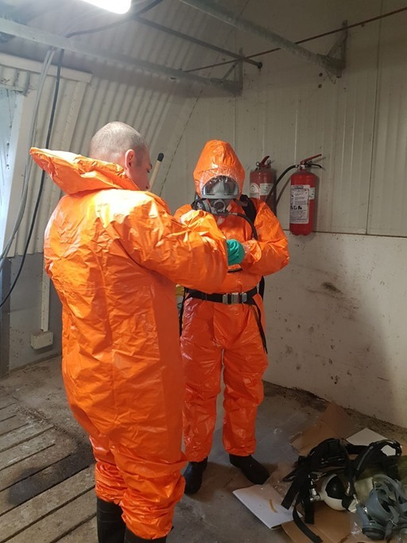

Suntem singurii parteneri capabili să implementeze protocoale de urgență pentru limitarea pagubelor și salvarea animalelor sănătoase, chiar și după confirmarea prezenței virusului , dar pentru asemenea rezultate .....munca începe cu mult înainte de contaminare.
...este mai ieftină decât tratamentul! Investițiile în măsuri de biosecuritate economisesc bani pentru tratamente costisitoare, productivitate redusă și potențială sacrificare a animalelor.